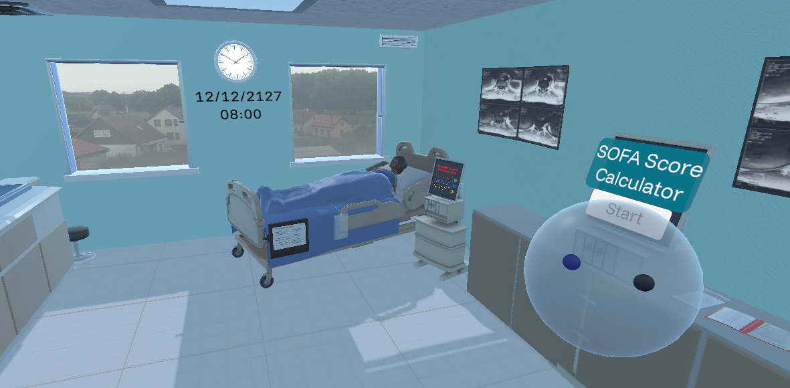

This is a user study for a Bachelor's thesis at the Technical University of Munich. We're exploring how Virtual Reality (VR) can be used to teach about recognizing health conditions in an ICU setting.
Who can join?
Anyone aged 18 and above, especially university students. You don’t need any background in medicine or VR.
What you'll do:
Try a 30-minute interactive VR experience that teaches you how medical professionals assess organ function in critical care.
No prior experience with sepsis, SOFA score, or VR required!
What to expect:
You’ll start with a quick pre-survey, then complete the VR training, and finish with a short post-survey.
📍 Location:
Technical University of Munich
Klinikum rechts der Isar
Human-Centered Computing and Extended Reality Lab
Trogerstrasse 10, 81675 Munich
Find us on the third floor.
📅 Available Dates:
14 – 18 April 2025 (Monday to Friday)
🕒 Time Slots:
Sessions available hourly from 10:00 AM to 5:00 PM.
We’ll send you a list of open slots so you can choose what works best.
Interested?
Email us to sign up or ask questions:
ab.demirok@tum.de